I Algemeen
Rijnvaartpolitiereglement 1995
1. De in deze bijlage opgenomen schetsen hebben slechts een verduidelijkend karakter. Men dient zich te houden aan de tekst van het reglement die uitsluitend rechtsgeldigheid bezit.
2. Een duwstel, waarvan de grootste lengte en de grootste breedte niet meer dan 110 m respectievelijk 12 m bedraagt, wordt beschouwd als een alleen varend motorschip van dezelfde lengte.
3. Verklaringen:

vast licht dat rondom schijnend is
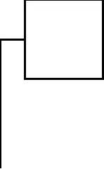
vast licht dat schijnt over een beperkte boog van de horizon

flikkerlicht

vlag of bord

bol
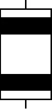
cilinder
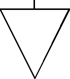
kegel

ruit
Een voor de waarnemer niet zichtbaar licht is met een punt in het midden aangeduid.
De schetsen op zwarte ondergrond stellen de lichten voor.
Lichten | Schets | Dagtekens |
 | 1 | |
Artikel 3.01 Begripsbepalingen en toepassing Lid 1: De sektoren waarover het toplicht, de boordlichten en het heklicht zichtbaar zijn. | ||
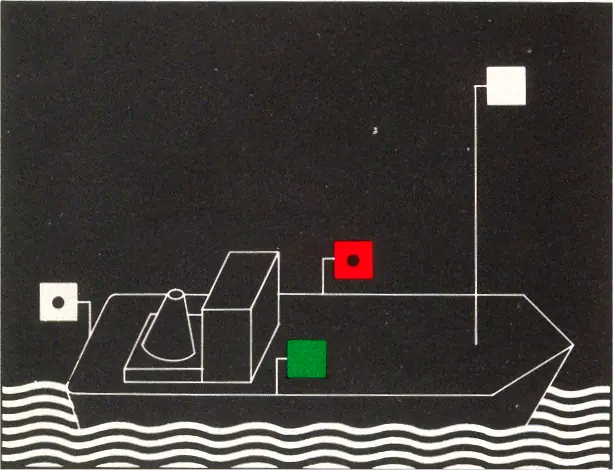 | 2 | |
Artikel 3.08 Alleenvarende motorschepen Lid 1: Lengte tot 110 m. | ||
 | 3 | |
Artikel 3.08 Alleenvarende motorschepen Lid 2: Lengte meer dan 110 m. | ||
Lichten | Schets | Dagtekens |
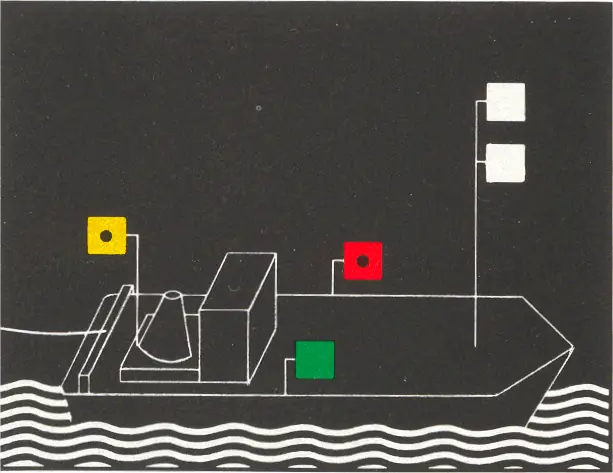 | 4 | 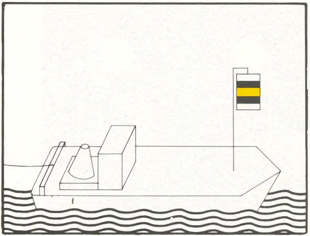 |
Artikel 3.09 Varende Slepen Lid 1: Motorschip aan de kop van een varende sleep. | ||
 | 5 |  |
Artikel 3.09 Varende Slepen Lid 2: Sleep aan de kop waarvan verscheidene motorschepen naast elkaar varen. | ||
 | 6 |  |
Artikel 3.09 Slepen Lid 3: Gesleepte schepen. | ||
Lichten | Schets | Dagtekens |
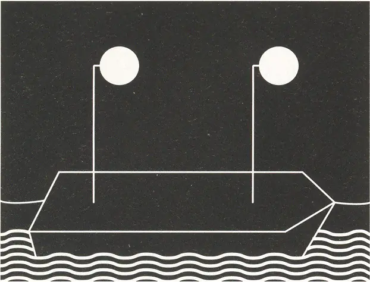 | 7 |  |
Artikel 3.09 slepen Lid 3 onder a: Lengte in een sleep langer dan 110 m. | ||
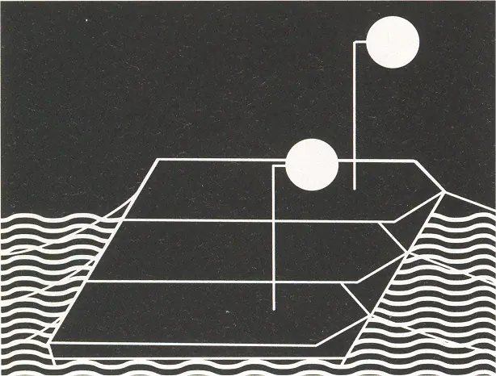 | 8 | 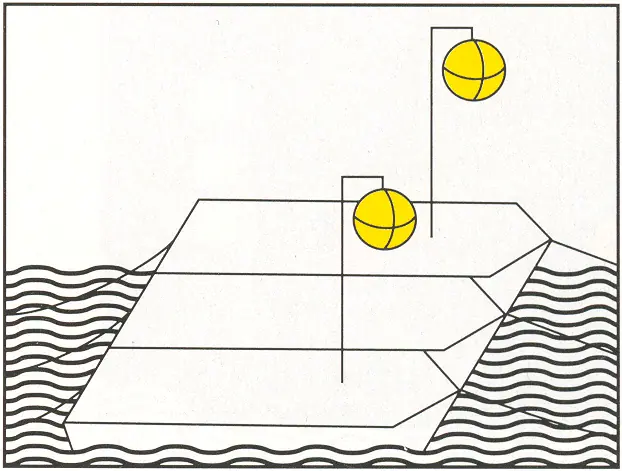 |
Artikel 3.09 slepen Lid 3 onder b: Lengte in een sleep bestaande uit meer dan twee langszijde van elkaar vastgemaakte schepen. | ||
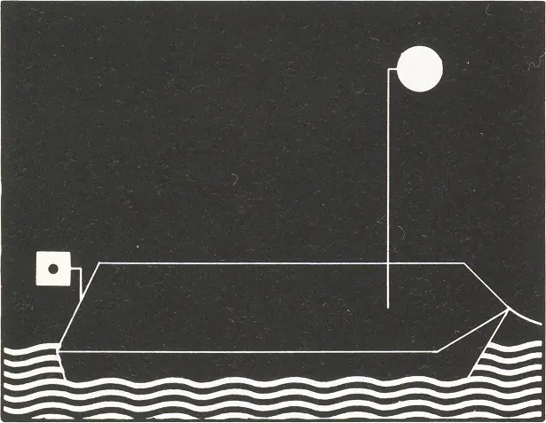 | 9 | 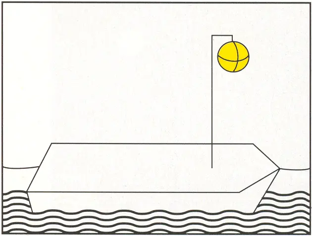 |
Artikel 3.09 slepen Lid 4: Schip als laatste lengte van een sleep. | ||
Lichten | Schets | Dagtekens |
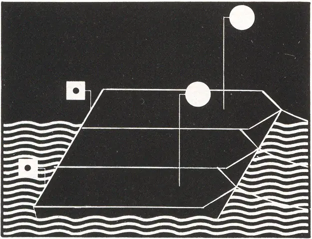 | 10 | 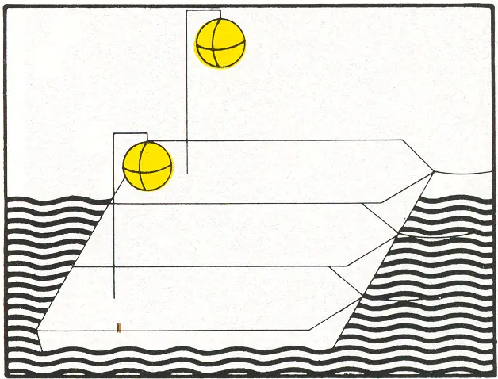 |
Artikel 3.09 Slepen Lid 4: Meerdere schepen als laatste lengte van een sleep. | ||
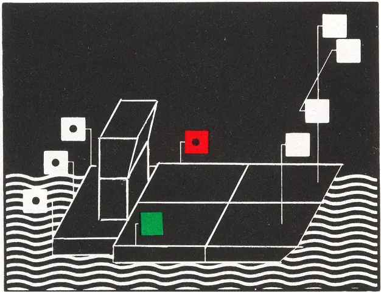 | 11 | |
Artikel 3.10 Duwstellen Lid 1: Duwstel | ||
 | 12 | |
Artikel 3.10 Duwstellen Lid 1 onder c: behalve de duwboot twee of meer andere schepen van achteren over de volle breedte inzetbaar. | ||
Lichten | Schets | Dagtekens |
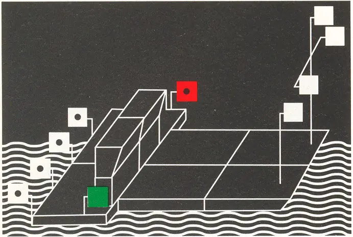 | 13 | |
Artikel 3.10 Duwstellen Lid 2: Twee duwboten | ||
 | 14 |  |
Artikel 3.10 Duwstellen Leden 3 en 4: Gesleept duwstel. | ||
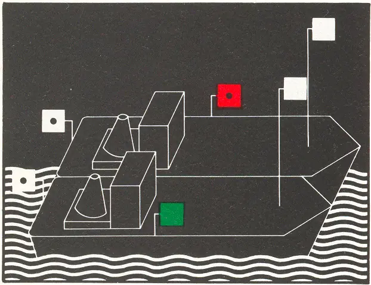 | 15 | |
Artikel 3.11 Gekoppelde samenstellen Lid 1: Twee motorschepen | ||
Lichten | Schets | Dagtekens |
 | 16 | |
Artikel 3.11 Gekoppelde samenstellen Lid 1: Een motorschip en een schip dat geen motorschip is. | ||
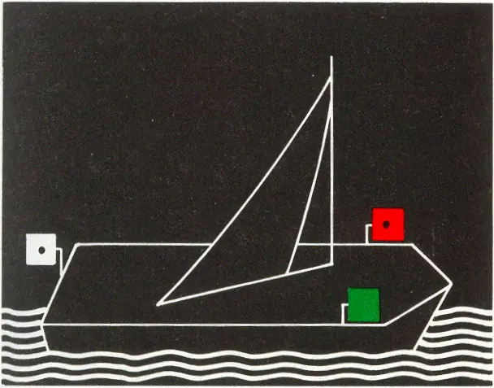 | 17 | |
Artikel 3.12 Zeilschepen | ||
 | 18 | |
Artikel 3.13 Kleine schepen Lid 1 onder a, b en c: Klein motorschip. | ||
Lichten | Schets | Dagtekens |
 | 19 | |
Artikel 3.13 Kleine schepen Lid 1 onder d, e, en f: Klein motorschip met de boordlichten onmiddellijk naast elkaar of in één lantaarn verenigd. | ||
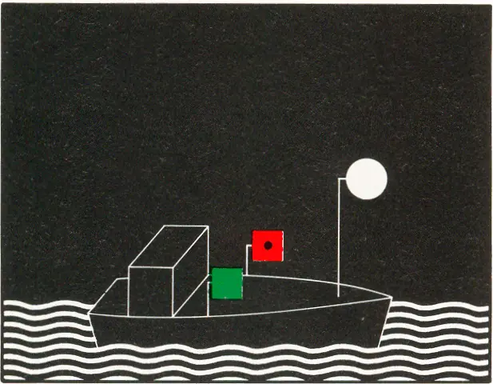 | 20 | |
Artikel 3.13 Kleine schepen Lid 1 onder f: klein motorschip met een rondom schijnend licht. | ||
 | 21 | |
Artikel 3.13 Kleine schepen Lid 3: Gesleept of langszijde vastgemaakt voorbewogen klein schip. | ||
Lichten | Schets | Dagtekens |
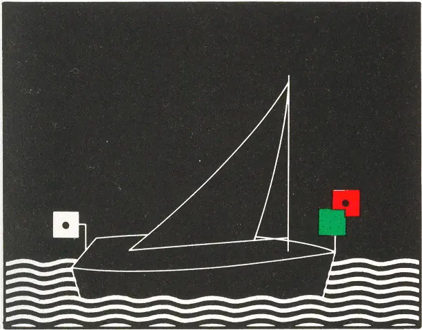 | 22 | |
Artikel 3.13 Kleine schepen Lid 4: Klein zeilschip. | ||
 | 23 | |
Artikel 3.13 Kleine schepen Lid 4: Klein zeilschip waarbij de boordlichten en het heklicht in één lantaarn aan de top van de mast verenigd zijn. | ||
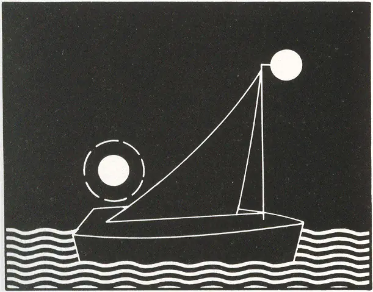 | 24 | |
Artikel 3.13 Kleine schepen Lid 4: Klein zeilschip met een rondom schijnend licht dat tevens bij het naderen van een ander schip een tweede licht toont. | ||
Lichten | Schets | Dagtekens |
 | 25 | |
Artikel 3.13 Kleine schepen Lid 5: Klein schip dat noch door middel van een motor noch door middel van zeilen wordt voortbewogen. | ||
 | 26 | 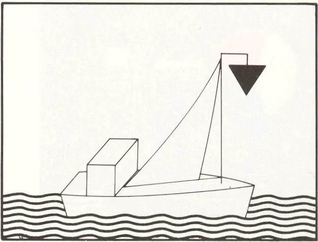 |
Artikel 3.13 Kleine schepen Leden 1 en 6: Klein schip dat gelijktijdig door middel van zeilen en door een motor wordt voortbewogen. | ||
 | 27a | 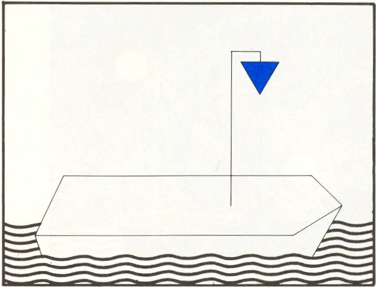 |
Artikel 3.14 Schepen die bepaalde gevaarlijke stoffen vervoeren Lid 1: Bepaalde brandbare stoffen, bedoeld in het ADN | ||
Lichten | Schets | Dagtekens |
27b |  | |
Artikel 3.14 Schepen die bepaalde gevaarlijke stoffen vervoeren Lid 1: Bepaalde brandbare stoffen, bedoeld in het ADN | ||
 | 28a | 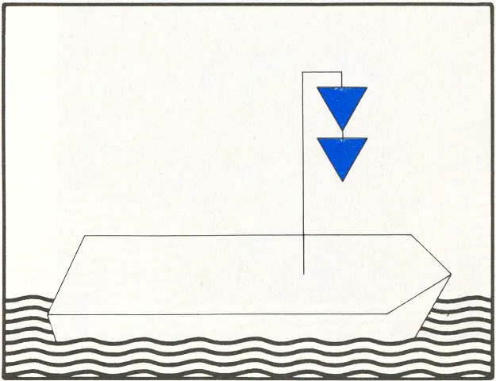 |
Artikel 3.14 Schepen die bepaalde gevaarlijke stoffen vervoeren Lid 2: Bepaalde voor de gezondheid schadelijke stoffen, bedoeld in het ADN | ||
28b | 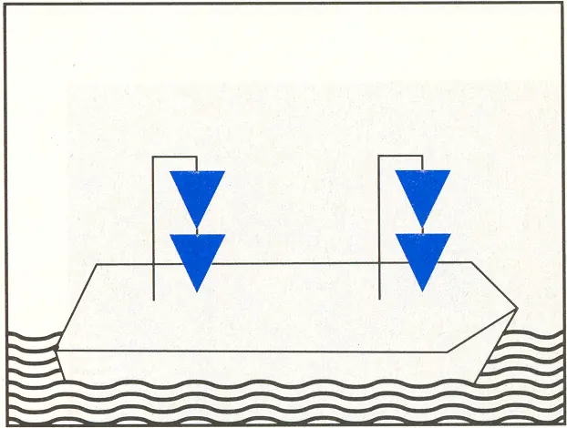 | |
Artikel 3.14 Schepen die bepaalde gevaarlijke stoffen vervoeren Lid 2: Bepaalde voor de gezondheid schadelijke stoffen, bedoeld in het ADN | ||
Lichten | Schets | Dagtekens |
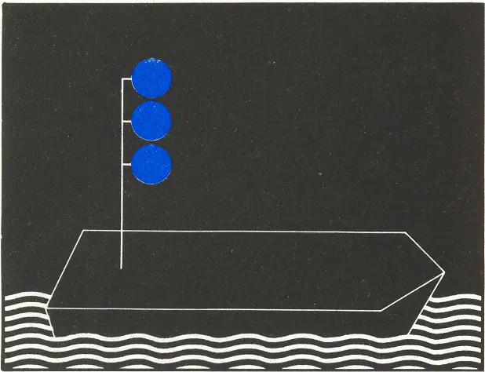 | 29 | 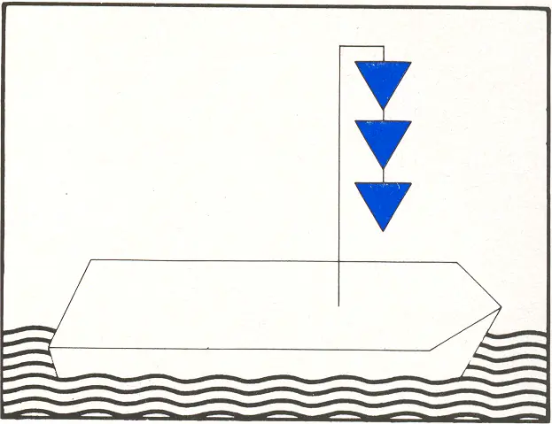 |
Artikel 3.14 Schepen die bepaalde gevaarlijke stoffen vervoeren Lid 3: Bepaalde ontplofbare stoffen, bedoeld in het ADN | ||
 | 30 | 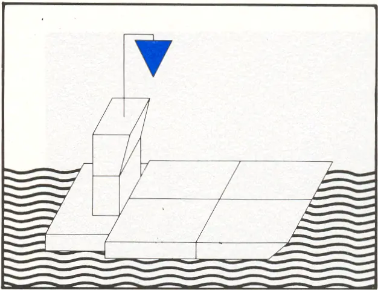 |
Artikel 3.14 Schepen die bepaalde gevaarlijke stoffen vervoeren Lid 4: Duwstel. | ||
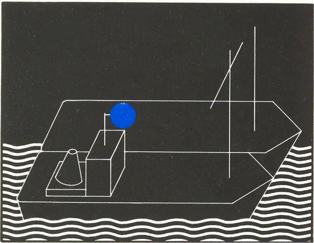 | 31 |  |
Artikel 3.14 Schepen die bepaalde gevaarlijke stoffen vervoeren Lid 4: Gekoppeld samenstel. | ||
Lichten | Schets | Dagtekens |
 | 32 |  |
Artikel 3.14 Schepen die bepaalde gevaarlijke stoffen vervoeren Lid 5: Duwstel met 2 duwboten. | ||
33 | 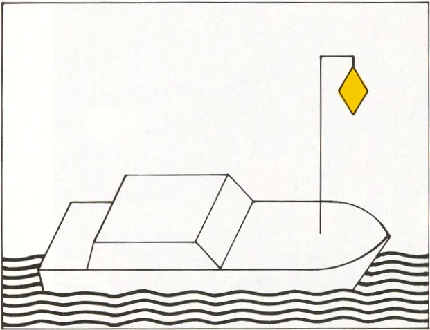 | |
Artikel 3.15 Schepen die meer dan 12 passagiers mogen vervoeren en warvan de maximale lengte van de romp minder dan 20 m is | ||
 | 34 | |
Artikel 3.16 Veerponten Lid 1: Niet-vrijvarende veerpont. | ||
Lichten | Schets | Dagtekens |
 | 35 | |
Artikel 3.16 Veerponten Lid 2: Meest bovenstrooms gelegen ankerschuit of drijver van een veerpont aan een langskabel. | ||
 | 36 | |
Artikel 3.16 Veerponten Lid 3: Vrijvarende veerpont. | ||
37 | 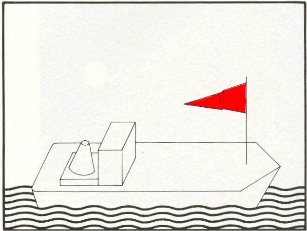 | |
Artikel 3.17 Schepen die recht van voorrang hebben | ||
Lichten | Schets | Dagtekens |
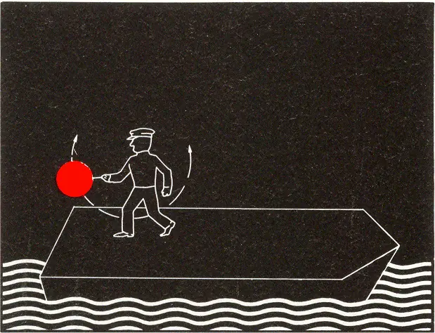 | 38 | 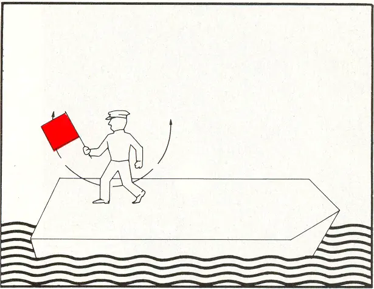 |
Artikel 3.18 Onmanoeuvreerbare schepen | ||
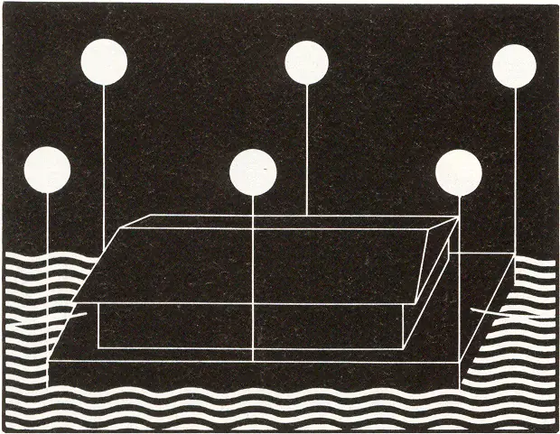 | 39 | |
Artikel 3.19 Drijvende voorwerpen en drijvende inrichtingen | ||
 | 40 | |
Artikel 3.20 Stilligende schepen Lid 1: Schip met uitzondering van een klein schip, een veerpont en een drijvend werktuig in bedrijf. | ||
Lichten | Schets | Dagtekens |
 | 41 | |
Artikel 3.20 Stilliggende schepen Lid 2: Klein schip met uitzondering van een bijboot. | ||
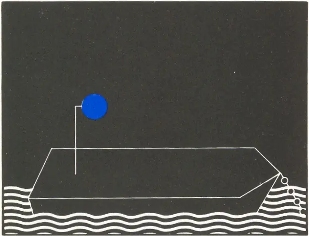 | 42 |  |
Artikel 3.21 Stilliggende schepen die bepaalde gevaarlijke stoffen vervoeren | ||
 | 43 | 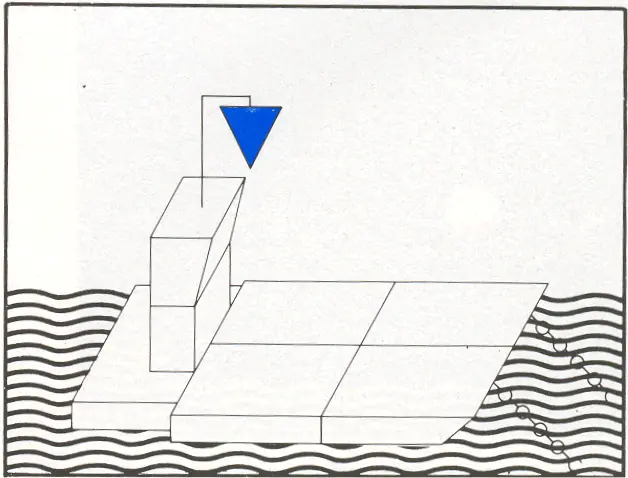 |
Artikel 3.21 Stilliggende schepen die bepaalde gevaarlijke stoffen vervoeren: Duwstellen. | ||
Lichten | Schets | Dagtekens |
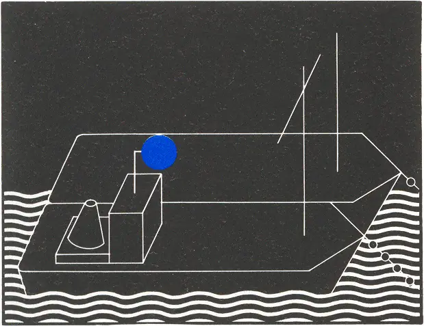 | 44 | 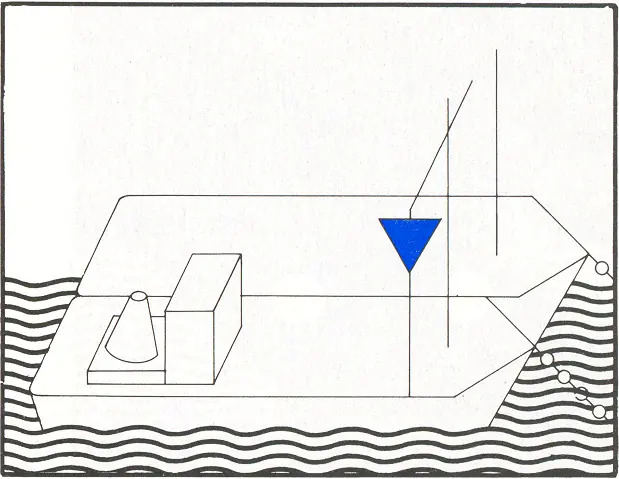 |
Artikel 3.21 Stilliggende schepen die bepaalde gevaarlijke stoffen vervoeren: Gekoppeld samenstel. | ||
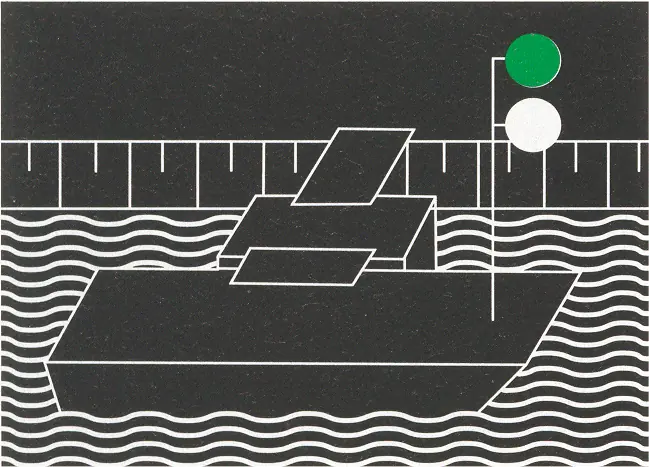 | 45 | |
Artikel 3.22 Op hun aanlegplaats stilliggende veerponten Lid 1: Niet-vrijvarende veerpont. | ||
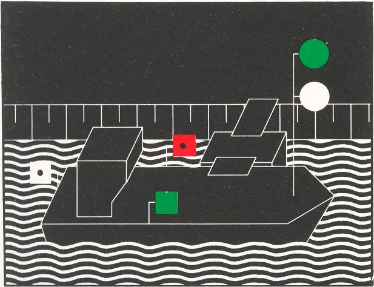 | 46 | |
Artikel 3.22 Op hun aanlegplaats stilliggende veerponten Lid 2: Vrijvarende veerpont. | ||
Lichten | Schets | Dagtekens |
 | 47 | |
Artikel 3.23 Drijvende voorwerpen en drijvende inrichtingen | ||
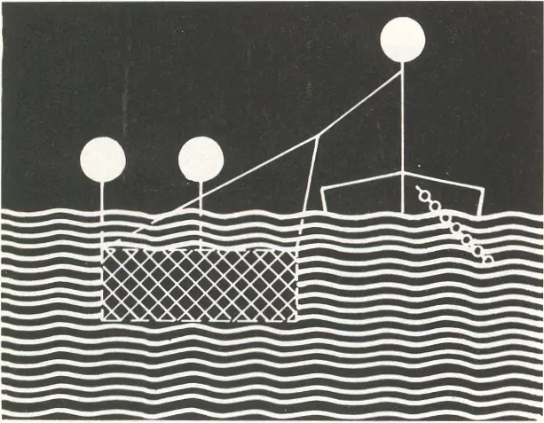 | 48 | 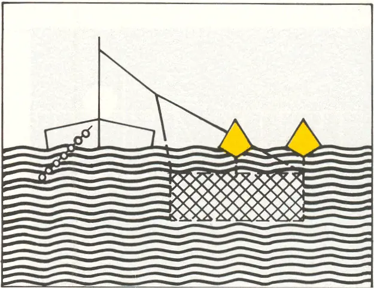 |
Artikel 3.24 Visserschepen met netten of uitleggers | ||
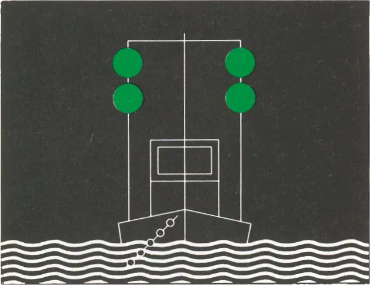 | 49a | 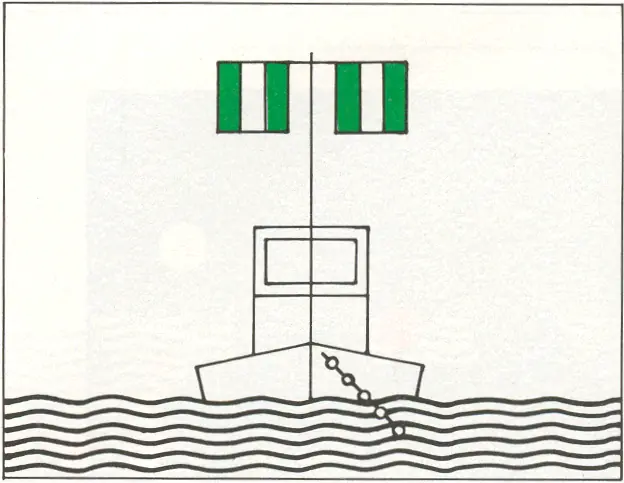 |
Lichten | Schets | Dagtekens |
49b | 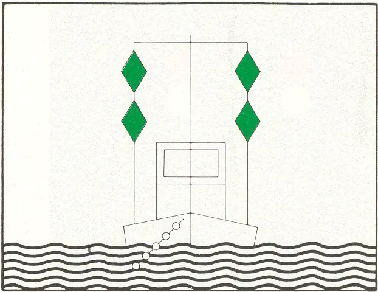 | |
Artikel 3.25 Drijvende werktuigen in bedrijf en vastgevaren of gezonken schepen Lid 1 onder a: doorvaart aan beide zijden vrij. | ||
 | 50a | 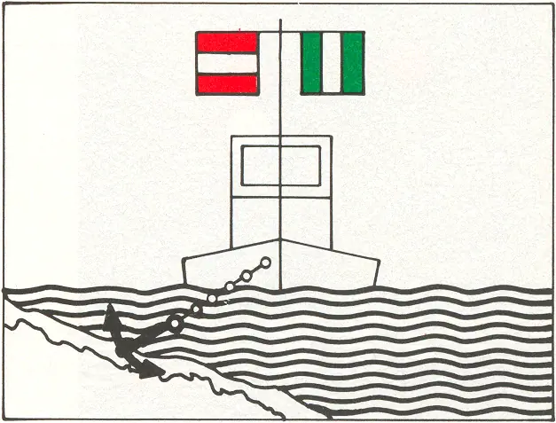 |
50b | 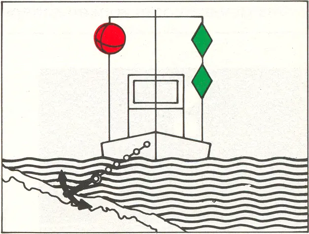 | |
Artikel 3.25 Drijvende werktuigen in bedrijf en vastgevaren of gezonken schepen Lid 1 onder a en b: doorvaart aan één zijde vrij. | ||
Lichten | Schets | Dagtekens |
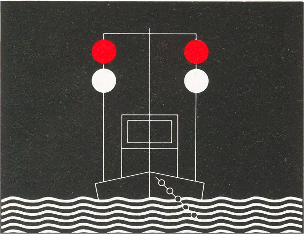 | 51 | 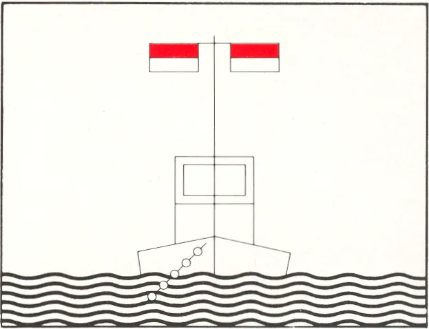 |
Artikel 3.25 Drijvende werktuigen in bedrijf en vastgevaren of gezonken schepen Lid 1 onder c: bescherming tegen hinderlijke waterbeweging; doorvaart aan beide zijden vrij. | ||
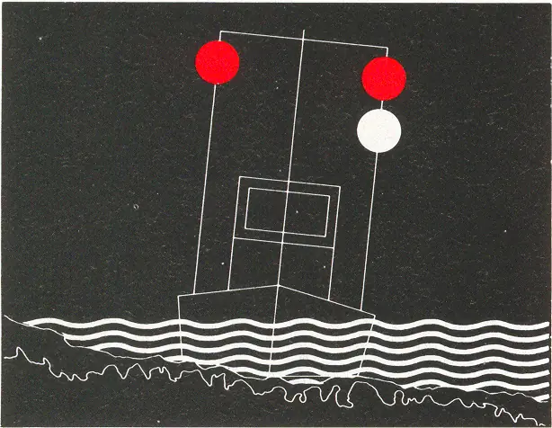 | 52 |  |
Artikel 3.25 Drijvende werktuigen in bedrijf en vastgevaren of gezonken schepen Lid 2: Vastgevaren of gezonken schepen; doorvaart aan één zijde vrij. | ||
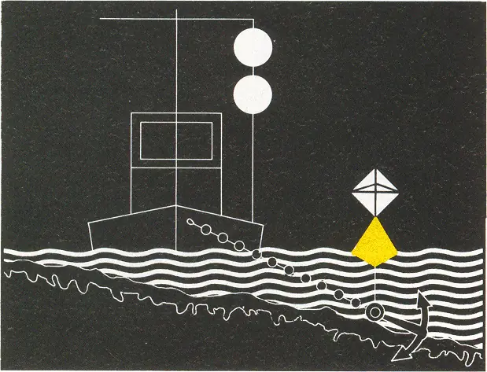 | 53 | |
Artikel 3.26 Schepen, drijvende voorwerpen en drijvende inrichtingen waarvan de ankers een gevaar voor de scheepvaart kunnen vormen Lid 1 en 3: Schip met anker. | ||
Lichten | Schets | Dagtekens |
 | 54 | |
Artikel 3.26 Schepen, drijvende voorwerpen en drijvende inrichtingen waarvan de ankers een gevaar voor de scheepvaart kunnen vormen Leden 2 en 3: Drijvend voorwerp of drijvende inrichting met ankers. | ||
 | 55 | |
Artikel 3.26 Schepen, drijvende voorwerpen en drijvende inrichtingen waarvan de ankers een gevaar voor de scheepvaart kunnen vormen Lid 4: Anker van een drijvend werktuig. | ||
56 |  | |
Artikel 3.27 Schepen van toezichthoudende ambtenaren. | ||
Lichten | Schets | Dagtekens |
57 |  | |
Artikel 3.28 Schepen die werkzaamheden in de vaarweg uitvoeren. | ||
58 |  | |
Artikel 3.29 Bescherming tegen hinderlijke waterbeweging. | ||
59 | ||
Artikel 3.30 Noodtekens. | ||
Lichten | Schets | Dagtekens |
62 | ||
Art 3.33 Verbod evenwijdig aan een schip ligplaats te nemen Art. 15.07, achtste lid, onderdeel a, plicht tot waakzaamheid bij het bunkeren van vloeibaar aardgas (LNG). | ||
Lichten | Schets | Dagtekens |
63 |  | |
Artikel 6.04 Ontmoeten Lid 3: Ontmoeten stuurboord op stuurboord. | ||
64 | ||
Artikel 3.08 Alleenvarende motorschepen Lid 3: Snel schip |
Artikel 2.06 Kenteken van schepen die vloeibaar aardgas (LNG) als brandstof gebruiken